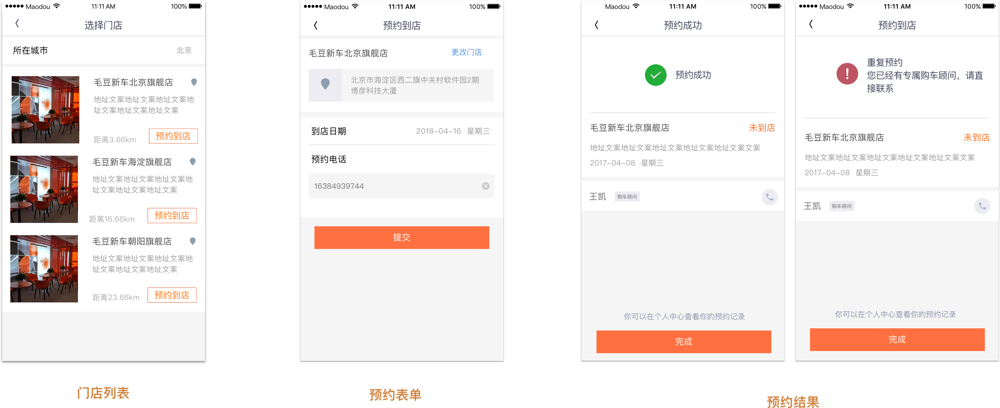

毛豆 App 到店预约
毛豆新车网开始布局线下门店。我们在移动端设计了门店预约功能。客户可以选择所在位置附近的门店以及预约到店时间。
项目时间：2018年4月
毛豆新车的线下门店需要客户拜访
毛豆新车2018年开始建立线下门店。我们需要向客户推广门店信息，并鼓励他们拜访门店。
商业目标
实现预约业务的主要商业目标是
- 提升客户对门店的感知
- 吸引更多的客户拜访门店
- 获取有意向的客户的线索（手机号）
关键指标
门店预约数量
用户什么时候想预约到店？如何预约？
通过分析当前用户使用路径，我们找到 2 处可以让用户注意到门店信息并需要预约服务的位置。
初步探索方案，确定基本概念后，设定具体的设计目标。
用户路径和设计目标
设计方案
详情页信息展示
我们在车辆详情页中加入门店信息，使访问者感知门店的存在，同时激励用户预约门店拜访。
我们设计了不同原型，了解什么样的内容会跟容易让访问者对门店感兴趣。

我们考虑了门店信息呈现的位置
预约流程
流程分析

预约的状态与操作
根据预约的不同状态，客户可以执行不同的操作。
工单状态分析

上线后，我们分析用户行为数据
功能上线后，我们需要进行数据的检测，已了解用户行为和功能对业务产生的影响。
我们发现门店信息曝光的次数占详情页点击次数的 80% 左右，符合我们的期望。其中约有 5% 的用户点击了 CTA 按钮和门店列表链接。我们获得了一定数量的来自门店预约的线索。
我们也发现点击预约的次数远大于点击门店的次数。原因可能是客户倾向于去离自己最近的门店。也有可能是 CTA 按钮对用户行为产生了刺激作用。